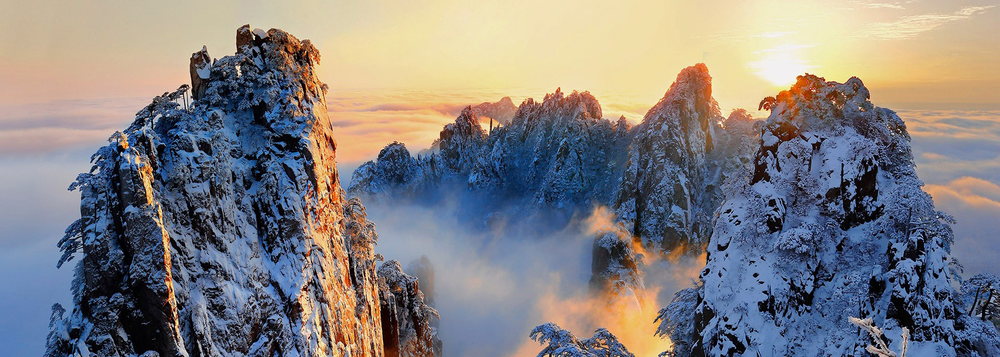

黄山，被誉为“中国第一奇山”，不仅以其雄伟壮观的山峰、奇特多姿的松树、变幻莫测的云海闻名于世，更以其精巧细致的园林艺术而著称。黄山的园林，既有自然天成的野趣，又有人工雕琢的精致，二者相得益彰，构成了黄山独特的园林风格。
一、自然与人工的和谐共生 黄山园林之美，首先在于其自然与人工的和谐共生。这里的园林设计，充分利用了黄山的自然地形和植被，通过巧妙的布局和精致的点缀，使人工建筑与自然景观融为一体。无论是山间的小径、溪边的亭台，还是林间的楼阁、石上的题刻，都与周围的自然环境相映成趣，形成了一种“虽由人作，宛自天开”的艺术效果。
二、精巧细致的园林建筑 黄山园林中的建筑，也是其一大特色。这些建筑多以木结构为主，造型各异，精巧细致。无论是高耸入云的楼阁，还是低矮古朴的亭台，每一处都有其独特的建筑风格和历史文化内涵。这些建筑不仅为游客提供了休憩的场所，更成为了欣赏黄山美景的绝佳观景台。
三、丰富多样的园林植物 黄山园林中的植物种类繁多，既有高耸挺拔的松树、婀娜多姿的柳树，又有五彩斑斓的花卉、形态各异的藤蔓。这些植物不仅美化了环境，更为园林增添了生机和活力。在不同的季节里，黄山园林呈现出不同的景色：春天的满园春色、夏日的绿树成荫、秋天的红叶满山、冬日的银装素裹，每一季都有其独特的美。